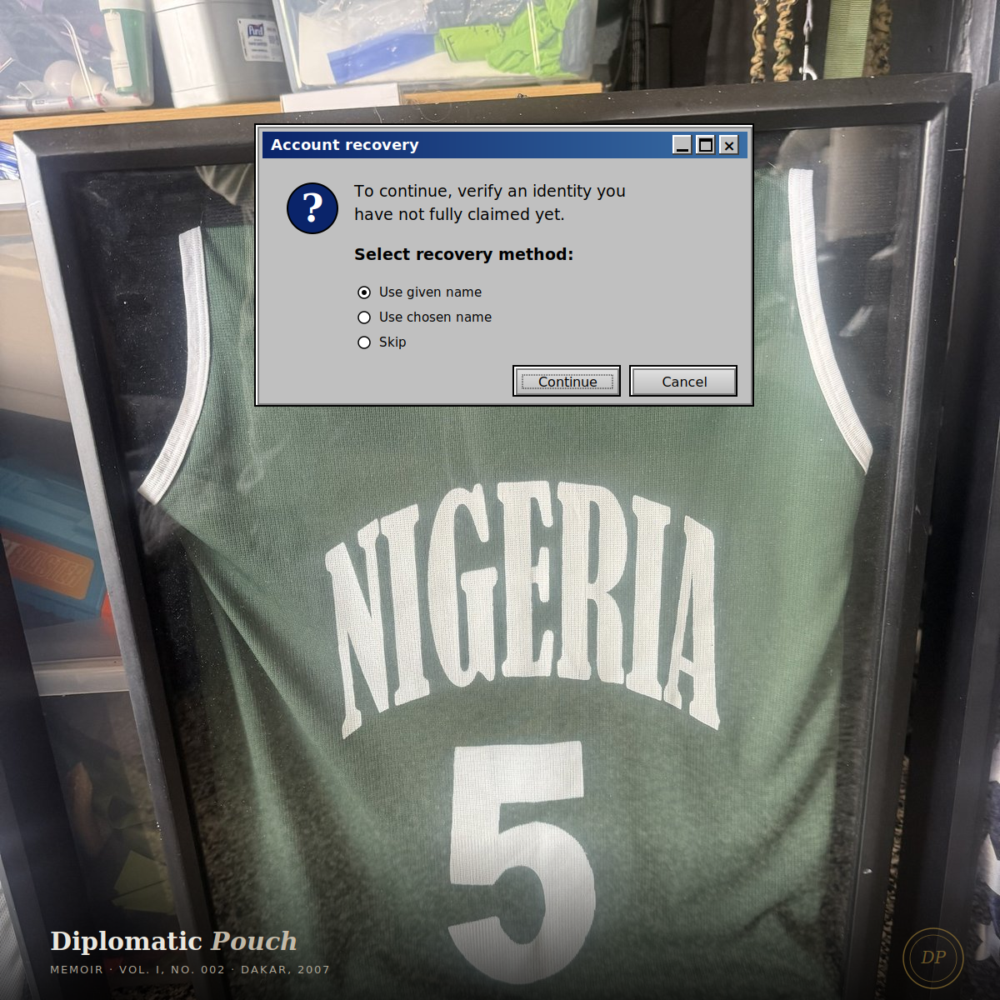

Dakar, 2007 — Toward Beijing 2008
On wearing a jersey for a country I had been born in but had not yet lived enough of.

The first thing I remember about Dakar is the heat outside the arena. Not the courtside heat — that was familiar from a thousand college gyms in the United States — but the heat walking from the bus to the entrance, in the green and white, wearing the jersey of a country I had been born in but had not yet lived enough of to claim without some quiet caveat in my chest.
I was a junior in college. I had spent the academic year playing American basketball: the bus rides, the tape sessions, the conditioning that made every practice feel like a war you were losing slowly. Then the call came that I had been selected to represent Nigeria in international competition, and that September my body crossed an ocean to play a game I had been playing my whole life for a country I had been born in and then taken away from before I had words for what taking-away meant.
I want to tell you the obvious thing first, because I am not going to dwell on it: I was the only person on the roster who would later transition. Nobody on that team knew. I am not sure I knew, not in the way I know now. What I knew was that my body had carried me through college basketball, and was carrying me through Dakar, and was carrying me toward something I had not yet named. The body knew. The mind would catch up.
The tournament was the FIBA Africa Championship for Women — the one continental ticket to the basketball event of the Beijing 2008 Olympics. Nigeria was paying for nothing. We slept in a hotel that was, by every reasonable accounting, two stars below where international athletes ought to sleep. The food was Nigerian, which I loved. The schedule was West African, which meant it was real and lived-in rather than the Swiss precision of a European tournament. My teammates were from everywhere — some born in Lagos, some in the diaspora, some who had never set foot in Nigeria but were carrying citizenship and ancestry into a game that would decide which African team boarded the plane for Beijing.
I played college basketball in the United States. I had been recruited like an American kid, scouted like an American kid, trained like an American kid. The body that walked into the Dakar arena was a body that had been forged in NCAA practice gyms. The jersey I put on each morning belonged to a different country than the body it covered. I want to be honest about that gap, because it is the same gap I have been writing about all week in this newsletter under a different name.
When I wore the Nigerian jersey, I was correctly authenticated. The passport said so. The federation said so. The line on the roster sheet said so. The body was the body the system had said it was. But there was a gap between authentication and identification — the same gap I would later write about in cybersecurity terms. The system said Mojidi. The crowd, the opposing coach, the journalist filing the post-game wire, all had to do their own identification work to figure out who I actually was. Some of them did it well. Some of them did not.
The jersey is authentication. The body is identification. The space between them is where every interesting question lives.
What I remember
I remember the smell of the locker room before the first game. I remember the way the Senegalese crowd reacted to the Nigerian national anthem with a kind of polite intensity that I had not encountered before. They were not rooting for us. They were also not rooting against us in any way I could name. They were attending. They were witnessing. That is its own kind of relationship to power on a court.
I remember calling my mother after one of the games. She was at her posting in Central Asia at the time. She picked up the phone like she always did, like she had been waiting for the call but did not want to say so. I told her how the game had gone. She listened. She said the things mothers say. She did not say the thing that was underneath every conversation we had in those years, which was that her son was playing for the country she had built her career describing to American policymakers.
The throughline
I am writing this newsletter from a small home office in Maryland, nearly two decades and several lives later, finishing a renovation in time for my fortieth birthday. The jersey from that fall is folded in a drawer in another room of the house. I have not put it on in years. I do not need to. The jersey did its work. The body kept going.
What I think the trip taught me — what most of the unusual things you do at twenty-one teach you, if you are paying attention — is that the systems that authenticate you are not the same as the people who identify you, and that the work of becoming yourself is the work of slowly building the second category around the first one. Nigeria authenticated me as a player. My body, my game, my willingness to do the work, identified me as the player I actually was. The two had to meet on the court. Sometimes they did and sometimes they did not. That is true of every system I have worked on since.
The record
I want to be specific about what the body did, because I do not believe in claims that cannot be verified. I played four years of NCAA Division I basketball at the University of Rhode Island and graduated in 2008. I finished my college career ranked in the top five in program history in points, with 1,601 of them. Top five in steals. Top five in assists. The school record for three-pointers made was mine. The Bullis School, where I played before college, inducted me into its Athletic Hall of Fame.
I do not lead with any of this in client conversations. I am noting it here because the security industry has spent a long time pretending that practice is something that happens at a desk, and the rest of the practitioner is something that happened somewhere else. The body that shot 1,601 points at Division I was the same body that learned, on the long bus rides between practice and away games, what it meant to be the single point of availability for a team. The hours I spent in tape sessions reading what an opposing guard would do under pressure were the same hours I now spend reading what an attacker will do under pressure. The pattern recognition is the same. The discipline is the same. The body is the same.
Right now, as I am writing this, the next Olympic cycle, toward Los Angeles 2028, is underway. The Nigerian women's program I was part of in 2007 has become, in the years since, the dominant force in African women's basketball — multiple consecutive AfroBasket titles, an unbeaten streak in continental play that has lasted more than a decade, and a quarterfinal run at the 2024 Paris Olympics that made them the first African basketball team, women's or men's, to make it past the group phase of an Olympic Games. I am not in any of those games. The team I played for in Dakar was not yet what the team has become. I am writing this in part to mark that lineage, because the security work I do now would not exist without the discipline I learned wearing that earlier jersey.
Trust, when it has been built carefully, persists in the bodies of the people who carried it. I wrote that line in the manifesto last week, and I meant it then, and I mean it now in a different register. The trust I have asked clients to extend to me as a cybersecurity advisor is built on a stack that includes a body that played at the highest level it knew how to play. That stack is not a metaphor. It is the actual lineage of the practice. The desk and the court were never two different rooms.
— Dr. Safi Mojidi